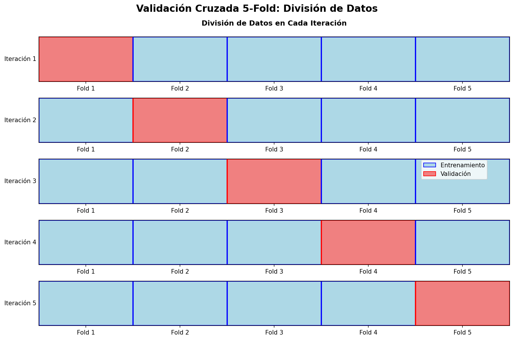
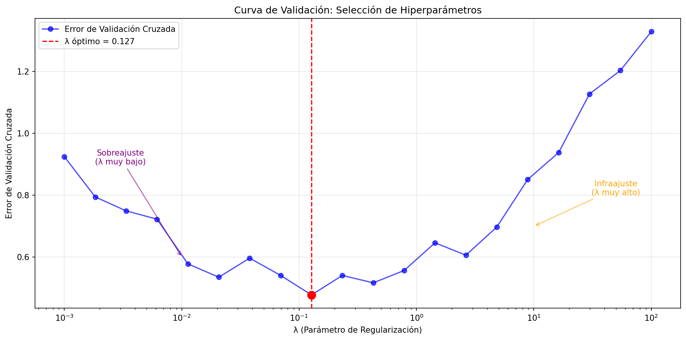

3 Regresión lineal
3.1 Regresión Lineal Simple
Comenzaremos con el caso más sencillo: predecir una variable de resultado Y a partir de una única variable predictora X.
El modelo matemático que queremos ajustar es una línea recta:
\[Y = \beta_0 + \beta_1 X + \epsilon\]
Donde:
- \(Y\): La variable dependiente (lo que queremos predecir).
- \(X\): La variable independiente (nuestro predictor).
- \(\beta_0\): El intercepto (el valor de \(Y\) cuando \(X=0\)).
- \(\beta_1\): La pendiente (cuánto cambia \(Y\) por cada unidad que aumenta \(X\)).
- \(\epsilon\): El término de error (la parte de \(Y\) que nuestro modelo no puede explicar).
Nuestro objetivo 🎯 es encontrar los mejores valores posibles para los coeficientes \(\beta_0\) y \(\beta_1\) usando los datos que tenemos.
3.1.1 ¿Cómo estimamos los coeficientes \(\beta_0\) y \(\beta_1\)?
“Mejor” para nosotros significa encontrar la línea que minimice la distancia vertical entre cada punto de dato y la propia línea. Específicamente, minimizamos la Suma de los Errores al Cuadrado (SEC o Sum of Squared Errors, SSE).
La función de costo (o pérdida) que queremos minimizar es:
\[J(\beta_0, \beta_1) = \sum_{i=1}^{n} (y_i - (\beta_0 + \beta_1 x_i))^2\]
Tenemos dos métodos principales para encontrar los \(\beta\) que minimizan esta función:
3.1.1.1 Método 1: Las Ecuaciones Normales (La solución analítica 🧠)
Este método utiliza cálculo para encontrar el mínimo exacto de la función de costo. Para ello, tomamos las derivadas parciales de \(J\) con respecto a \(\beta_0\) y \(\beta_1\), las igualamos a cero y resolvemos para los coeficientes.
Derivada parcial con respecto a \(\beta_0\):
\[\frac{\partial J}{\partial \beta_0} = \sum_{i=1}^{n} -2(y_i - \beta_0 - \beta_1 x_i) = 0\] \[\sum y_i - n\beta_0 - \beta_1 \sum x_i = 0\] \[\hat{\beta}_0 = \bar{y} - \hat{\beta}_1 \bar{x}\]
Derivada parcial con respecto a \(\beta_1\)
\[\frac{\partial J}{\partial \beta_1} = \sum_{i=1}^{n} -2x_i(y_i - \beta_0 - \beta_1 x_i) = 0\] Sustituyendo \(\beta_0\) de la primera ecuación y resolviendo, llegamos a: \[\hat{\beta}_1 = \frac{\sum_{i=1}^{n} (x_i - \bar{x})(y_i - \bar{y})}{\sum_{i=1}^{n} (x_i - \bar{x})^2}\]
Estas fórmulas nos dan los valores óptimos y exactos de los coeficientes directamente a partir de los datos.
3.1.1.2 Método 2: Descenso en Gradiente (La solución iterativa ⚙️)
Este es un método computacional que nos “acerca” progresivamente a la solución. Es especialmente útil cuando tenemos una cantidad masiva de datos y calcular la solución analítica es muy costoso.
La intuición: Imagina que estás en una montaña (la función de costo) y quieres llegar al valle (el costo mínimo). El Descenso en Gradiente te dice que mires a tu alrededor y des un paso en la dirección más inclinada hacia abajo. Repites esto hasta llegar al fondo.
El algoritmo funciona así:
- Inicializa los coeficientes \(\beta_0\) y \(\beta_1\) con valores aleatorios (o en ceros).
- Calcula el gradiente de la función de costo. El gradiente es un vector que apunta en la dirección del máximo ascenso. Nosotros iremos en la dirección opuesta.
- \(\frac{\partial J}{\partial \beta_0} = -2 \sum (y_i - (\beta_0 + \beta_1 x_i))\)
- \(\frac{\partial J}{\partial \beta_1} = -2 \sum x_i(y_i - (\beta_0 + \beta_1 x_i))\)
- Actualiza los coeficientes usando una tasa de aprendizaje (\(\alpha\)), que controla el tamaño del paso que damos.
- \(\beta_0 := \beta_0 - \alpha \frac{\partial J}{\partial \beta_0}\)
- \(\beta_1 := \beta_1 - \alpha \frac{\partial J}{\partial \beta_1}\)
- Repite los pasos 2 y 3 durante un número determinado de iteraciones o hasta que el cambio en el costo sea muy pequeño (convergencia).
Explicacion visual

3.2 ¿Cuáles son los supuestos de la regresión? 🧐
Para que nuestro modelo sea confiable (es decir, para que los coeficientes y las predicciones tengan sentido), debemos cumplir con ciertos supuestos.
- Linealidad: La relación entre \(\beta\) y \(Y\) debe ser lineal.
- ¿Para qué sirve? Si la relación no es lineal, nuestro modelo de línea recta será intrínsecamente incorrecto.
- Independencia de los errores: Los errores (residuos) no deben estar correlacionados entre sí.
- ¿Para qué sirve? Es crucial para datos de series temporales. Si los errores están correlacionados, la información de un error nos da pistas sobre el siguiente, lo cual viola la idea de que cada observación es independiente.
- Homocedasticidad (Varianza constante de los errores): La varianza de los errores debe ser constante para todos los niveles de \(X\).
- ¿Para qué sirve? Si la varianza cambia (heterocedasticidad), nuestras predicciones serán mejores para algunas partes de los datos que para otras, y los intervalos de confianza para los coeficientes serán poco fiables. Visualmente, en un gráfico de residuos vs. valores predichos, no queremos ver una forma de cono o embudo.
- Normalidad de los errores: Los errores deben seguir una distribución normal con media cero.
- ¿Para qué sirve? Este supuesto es fundamental para poder realizar pruebas de hipótesis sobre los coeficientes (como los p-values) y construir intervalos de confianza. Podemos verificarlo con un histograma de los residuos o un gráfico Q-Q.
3.3 ¿Cómo evaluar la precisión del modelo? 📈
Una vez que hemos ajustado el modelo, ¿cómo sabemos si es bueno?
3.3.1 Coeficiente de Determinación (\(R^2\))
El \(R^2\) mide la proporción de la varianza total en la variable dependiente (\(Y\)) que es explicada por nuestro modelo.
\[R^2 = 1 - \frac{\text{Suma de Errores al Cuadrado (SEC)}}{\text{Suma Total de Cuadrados (STC)}} = 1 - \frac{\sum (y_i - \hat{y}_i)^2}{\sum (y_i - \bar{y})^2}\]
- \(R^2\) varía entre 0 y 1 (o 0% y 100%).
- Un \(R^2\) de 0.85 significa que el 85% de la variabilidad en \(Y\) puede ser explicada por \(X\).
- Un \(R^2\) más alto generalmente indica un mejor ajuste del modelo.
3.3.2 p-values (Valores p)
El p-value nos ayuda a determinar si nuestra variable predictora \(X\) es estadísticamente significativa. Responde a la pregunta: ¿Es probable que la relación que observamos entre \(X\) y \(Y\) haya ocurrido por puro azar?
- Hipótesis Nula (\(H_0\)): No hay relación entre \(X\) y \(Y\) (es decir, \(\beta_1 = 0\)).
- Hipótesis Alternativa (\(H_a\)): Sí hay una relación entre \(X\) y \(Y\) (es decir, \(\beta_1 \neq 0\)).
Un p-value pequeño (típicamente < 0.05) nos da evidencia para rechazar la hipótesis nula. Esto sugiere que nuestra variable \(X\) es un predictor útil para \(Y\).
3.4 Métricas de Error de Predicción
Además del \(R^2\), existen múltiples métricas para evaluar qué tan bien predice nuestro modelo. Cada una tiene sus ventajas y casos de uso específicos:
3.4.1 Error Cuadrático Medio (MSE)
El MSE mide el promedio de los errores al cuadrado:
\[MSE = \frac{1}{n} \sum_{i=1}^{n} (y_i - \hat{y}_i)^2\]
- Ventajas: Penaliza fuertemente errores grandes, diferenciable (útil para optimización)
- Desventajas: Sensible a valores atípicos, difícil de interpretar (unidades al cuadrado)
- Cuándo usar: Cuando errores grandes son especialmente costosos
3.4.2 Raíz del Error Cuadrático Medio (RMSE)
El RMSE es la raíz cuadrada del MSE:
\[RMSE = \sqrt{MSE} = \sqrt{\frac{1}{n} \sum_{i=1}^{n} (y_i - \hat{y}_i)^2}\]
- Ventajas: Mismas unidades que la variable objetivo, interpretable
- Desventajas: Aún sensible a valores atípicos
- Interpretación: “En promedio, nuestras predicciones se desvían X unidades del valor real”
3.4.3 Error Absoluto Medio (MAE)
El MAE mide el promedio de los errores absolutos:
\[MAE = \frac{1}{n} \sum_{i=1}^{n} |y_i - \hat{y}_i|\]
- Ventajas: Robusto a valores atípicos, fácil de interpretar
- Desventajas: No diferenciable en cero, trata todos los errores por igual
- Cuándo usar: Cuando hay valores atípicos o todos los errores tienen igual importancia
3.4.4 Error Porcentual Absoluto Medio (MAPE)
El MAPE expresa el error como porcentaje del valor real:
\[MAPE = \frac{100}{n} \sum_{i=1}^{n} \left|\frac{y_i - \hat{y}_i}{y_i}\right|\]
- Ventajas: Interpretable (% de error), adimensional, útil para comparar modelos en diferentes escalas
- Desventajas: Indefinido cuando \(y_i = 0\), asimétrico (penaliza más las sobreestimaciones)
- Interpretación: “Nuestras predicciones se desvían en promedio X% del valor real”
- Cuándo usar: Para comparar precisión entre diferentes productos, regiones, o escalas
3.4.5 Error Porcentual Absoluto Medio Simétrico (SMAPE)
El SMAPE es una versión simétrica del MAPE:
\[SMAPE = \frac{100}{n} \sum_{i=1}^{n} \frac{|y_i - \hat{y}_i|}{(|y_i| + |\hat{y}_i|)/2}\]
- Ventajas: Simétrico, acotado entre 0% y 200%
- Desventajas: Puede ser contraintuitivo, no tan estándar como MAPE
- Cuándo usar: Cuando queremos evitar el sesgo del MAPE hacia sobreestimaciones
3.4.6 Error Logarítmico Cuadrático Medio (MSLE)
El MSLE usa transformación logarítmica:
\[MSLE = \frac{1}{n} \sum_{i=1}^{n} (\log(1 + y_i) - \log(1 + \hat{y}_i))^2\]
- Ventajas: Penaliza más las subestimaciones que las sobreestimaciones
- Desventajas: Solo para valores positivos, menos interpretable
- Cuándo usar: Cuando subestimar es más costoso que sobreestimar (ej: demanda de inventario)
3.4.7 \(R^2\) Ajustado
El \(R^2\) ajustado penaliza por el número de variables en el modelo:
\[R^2_{adj} = 1 - \frac{(1-R^2)(n-1)}{n-p-1}\]
Donde \(p\) es el número de predictores.
- Ventajas: No aumenta automáticamente al añadir variables
- Cuándo usar: Para comparar modelos con diferente número de variables
- Interpretación: Similar a \(R^2\) pero más conservador
3.4.7.1 ¿Cuál métrica elegir?
La elección de métrica depende del contexto del problema:
| Métrica | Mejor para | Evitar cuando |
|---|---|---|
| RMSE | Errores grandes son costosos | Hay muchos valores atípicos |
| MAE | Errores tienen igual importancia | Necesitas diferenciabilidad |
| MAPE | Comparar diferentes escalas | Hay valores cercanos a cero |
| SMAPE | Comparar con simetría | Interpretación debe ser simple |
| R² | Explicar variabilidad | Solo importa precisión de predicción |
Recomendación práctica
Usa múltiples métricas para evaluar tu modelo. Una combinación típica sería: - RMSE para precisión general - MAPE para interpretabilidad de negocio
- R² para explicación de variabilidad
3.5 Regresión Lineal Múltiple
Ahora, ¿qué pasa si tenemos múltiples predictores (\(X_1, X_2, ..., X_p\))? El modelo se expande:
\[Y = \beta_0 + \beta_1 X_1 + \beta_2 X_2 + ... + \beta_p X_p + \epsilon\]
La intuición es la misma, pero en lugar de ajustar una línea, estamos ajustando un hiperplano en un espacio multidimensional.
Para manejar esto de forma elegante, usamos notación matricial:
\[\mathbf{y} = \mathbf{X}\boldsymbol{\beta} + \boldsymbol{\epsilon}\]
Donde: - \(\mathbf{y}\) es el vector de observaciones. - \(\mathbf{X}\) es la matriz de diseño (con una primera columna de unos para el intercepto). - \(\boldsymbol{\beta}\) es el vector de coeficientes. - \(\boldsymbol{\epsilon}\) es el vector de errores.
La función de costo en forma matricial es: \[J(\boldsymbol{\beta}) = (\mathbf{y} - \mathbf{X}\boldsymbol{\beta})^T (\mathbf{y} - \mathbf{X}\boldsymbol{\beta})\]
3.6 Transformaciones Comunes en Modelos Lineales
A veces, la relación entre X e Y no es estrictamente lineal. Las transformaciones logarítmicas nos permiten modelar relaciones no lineales y, además, ofrecen interpretaciones muy útiles en términos de cambios porcentuales.
3.6.1 Modelo Log-Nivel (Transformación en Y)
Este modelo se usa cuando el efecto de X sobre Y no es absoluto, sino porcentual. Por ejemplo, cómo un año más de educación afecta el porcentaje de aumento salarial.
- Ecuación: \(\ln(Y) = \beta_0 + \beta_1 X + \epsilon\)
- Interpretación: Un incremento de una unidad en \(X\) está asociado con un cambio de \((100 \cdot \beta_1)\%\) en \(Y\).
Explicación Matemática de la Aproximación
La clave está en la propiedad del logaritmo y el cálculo. La derivada de \(\ln(Y)\) con respecto a \(X\) es \(\beta_1\): \[\frac{d(\ln(Y))}{dX} = \beta_1\] Sabemos que \(d(\ln(Y)) = \frac{dY}{Y}\). Por tanto: \[\frac{dY/Y}{dX} = \beta_1\] Para cambios pequeños (o discretos, \(\Delta\)), podemos aproximar los diferenciales: \[\beta_1 \approx \frac{\Delta Y / Y}{\Delta X}\] Si consideramos un cambio unitario en X, \(\Delta X = 1\), entonces: \[\beta_1 \approx \frac{\Delta Y}{Y}\] Esto significa que \(\beta_1\) es la aproximación del cambio porcentual en \(Y\) ante un cambio de una unidad en \(X\).
3.6.2 Modelo Nivel-Log (Transformación en X)
Este modelo es útil cuando el efecto de X sobre Y se reduce a medida que X aumenta (rendimientos decrecientes). Por ejemplo, el efecto de añadir presupuesto de marketing sobre las ventas.
- Ecuación: \(Y = \beta_0 + \beta_1 \ln(X) + \epsilon\)
- Interpretación: Un incremento del 1% en \(X\) está asociado con un cambio de \((\beta_1 / 100)\) unidades en \(Y\).
Explicación Matemática de la Aproximación
Tomamos la derivada de \(Y\) con respecto a \(\ln(X)\): \[\frac{dY}{d(\ln(X))} = \beta_1\] Usando la regla de la cadena, sabemos que \(d(\ln(X)) = \frac{dX}{X}\). Sustituyendo: \[\frac{dY}{dX/X} = \beta_1 \implies dY = \beta_1 \frac{dX}{X}\] Para cambios discretos, aproximamos: \[\Delta Y \approx \beta_1 \frac{\Delta X}{X}\] Si consideramos un cambio del 1% en X, entonces \(\frac{\Delta X}{X} = 0.01\). La ecuación se convierte en: \[\Delta Y \approx \beta_1 (0.01) = \frac{\beta_1}{100}\] Esto significa que un cambio del 1% en \(X\) provoca un cambio de \(\beta_1/100\) unidades en \(Y\).
3.6.3 Modelo Log-Log (Transformación en X e Y)
Este modelo es muy común en economía y modela la elasticidad constante entre dos variables.
- Ecuación: \(\ln(Y) = \beta_0 + \beta_1 \ln(X) + \epsilon\)
- Interpretación: Un incremento del 1% en \(X\) está asociado con un cambio del \(\beta_1\%\) en \(Y\).
Explicación Matemática de la Aproximación
Este caso combina los dos anteriores. \(\beta_1\) es la derivada de \(\ln(Y)\) con respecto a \(\ln(X)\), que es la definición de elasticidad. \[\beta_1 = \frac{d(\ln(Y))}{d(\ln(X))}\] Usando las propiedades del cálculo que vimos antes: \[\beta_1 = \frac{dY/Y}{dX/X}\] Aproximando para cambios discretos: \[\beta_1 \approx \frac{\Delta Y / Y}{\Delta X / X}\] Esta es la definición de elasticidad: el cambio porcentual en \(Y\) dividido por el cambio porcentual en \(X\). Por lo tanto, si \(X\) cambia en un 1% (\(\Delta X / X = 0.01\)), el cambio porcentual en \(Y\) (\(\Delta Y / Y\)) será aproximadamente \(\beta_1 \times 0.01\), es decir, un \(\beta_1\%\).
3.7 Regresión Regularizada (Penalizada) 🎯
Hasta ahora hemos visto la regresión lineal clásica, pero ¿qué pasa cuando tenemos muchas variables o cuando nuestro modelo sufre de sobreajuste? Aquí es donde entran las técnicas de regularización.
3.7.1 ¿Por qué necesitamos regularización?
La regresión lineal ordinaria (OLS) puede presentar varios problemas:
- Sobreajuste: Cuando tenemos muchas variables relativas al número de observaciones
- Multicolinealidad: Variables predictoras altamente correlacionadas
- Inestabilidad: Pequeños cambios en los datos causan grandes cambios en los coeficientes
- Interpretabilidad: Demasiadas variables hacen difícil entender el modelo
La regularización añade una penalización a la función de costo para controlar la complejidad del modelo.
3.7.2 Ridge Regression (Regresión Ridge) 🏔️
La regresión Ridge añade una penalización L2 (suma de cuadrados) a los coeficientes:
\[J_{Ridge}(\boldsymbol{\beta}) = \sum_{i=1}^{n} (y_i - \mathbf{x}_i^T\boldsymbol{\beta})^2 + \lambda \sum_{j=1}^{p} \beta_j^2\]
Donde: - \(\lambda > 0\) es el parámetro de regularización - \(\sum_{j=1}^{p} \beta_j^2\) es la penalización L2
3.7.2.1 Características de Ridge:
✅ Ventajas: - Reduce el sobreajuste - Maneja bien la multicolinealidad - Siempre tiene solución única - Estabiliza los coeficientes
❌ Desventajas: - NO elimina variables (coeficientes nunca son exactamente cero) - Dificulta la interpretabilidad - Requiere estandarizar las variables
3.7.2.2 Solución Analítica:
\[\hat{\boldsymbol{\beta}}_{Ridge} = (\mathbf{X}^T\mathbf{X} + \lambda\mathbf{I})^{-1}\mathbf{X}^T\mathbf{y}\]
El término \(\lambda\mathbf{I}\) hace que la matriz sea invertible incluso con multicolinealidad.
3.7.2.3 ¿Cómo elegir λ?
- λ = 0: Regresión ordinaria (sin penalización)
- λ → ∞: Todos los coeficientes → 0
- λ óptimo: Se encuentra usando validación cruzada
3.7.3 Lasso Regression (Least Absolute Shrinkage and Selection Operator) ✂️
La regresión Lasso usa penalización L1 (suma de valores absolutos):
\[J_{Lasso}(\boldsymbol{\beta}) = \sum_{i=1}^{n} (y_i - \mathbf{x}_i^T\boldsymbol{\beta})^2 + \lambda \sum_{j=1}^{p} |\beta_j|\]
3.7.3.1 Características de Lasso:
✅ Ventajas: - Selección automática de variables (coeficientes = 0) - Modelos más interpretables y simples - Útil cuando muchas variables son irrelevantes
❌ Desventajas: - Puede ser inestable con grupos de variables correlacionadas - Selecciona arbitrariamente entre variables correlacionadas - No tiene solución analítica cerrada
3.7.3.2 La “Magia” de L1: ¿Por qué produce ceros exactos?
La penalización L1 crea una región factible con esquinas puntiagudas. La solución óptima tiende a ocurrir en estas esquinas, donde algunos coeficientes son exactamente cero.
Intuición Geométrica
Imagina que estás minimizando una función bajo la restricción de que \(|\beta_1| + |\beta_2| \leq t\). Esta restricción forma un diamante en 2D. La función objetivo forma elipses. La solución está donde la elipse más pequeña toca el diamante, y esto frecuentemente ocurre en los vértices (donde \(\beta_1 = 0\) o \(\beta_2 = 0\)).
3.7.4 Elastic Net: Lo Mejor de Ambos Mundos 🕸️
Elastic Net combina las penalizaciones L1 y L2:
\[J_{ElasticNet}(\boldsymbol{\beta}) = \sum_{i=1}^{n} (y_i - \mathbf{x}_i^T\boldsymbol{\beta})^2 + \lambda_1 \sum_{j=1}^{p} |\beta_j| + \lambda_2 \sum_{j=1}^{p} \beta_j^2\]
O equivalentemente, con un parámetro de mezcla \(\alpha\):
\[J_{ElasticNet}(\boldsymbol{\beta}) = \sum_{i=1}^{n} (y_i - \mathbf{x}_i^T\boldsymbol{\beta})^2 + \lambda \left[ \alpha \sum_{j=1}^{p} |\beta_j| + (1-\alpha) \sum_{j=1}^{p} \beta_j^2 \right]\]
Donde: - \(\alpha \in [0,1]\) controla la mezcla entre L1 y L2 - \(\alpha = 0\): Pure Ridge - \(\alpha = 1\): Pure Lasso - \(\alpha = 0.5\): Igual peso a ambas penalizaciones
3.7.4.1 Características de Elastic Net:
✅ Ventajas: - Selección de variables como Lasso - Estabilidad como Ridge - Maneja bien grupos de variables correlacionadas - Más flexible que Ridge o Lasso por separado
❌ Desventajas: - Dos hiperparámetros para ajustar (\(\lambda\) y \(\alpha\)) - Más complejo computacionalmente
3.7.5 Comparación Visual: Ridge vs Lasso vs Elastic Net
| Aspecto | Ridge | Lasso | Elastic Net |
|---|---|---|---|
| Penalización | L2: \(\sum \beta_j^2\) | L1: \(\sum |\beta_j|\) | L1 + L2 combinadas |
| Selección de variables | ❌ No | ✅ Sí | ✅ Sí |
| Coeficientes exactamente cero | ❌ No | ✅ Sí | ✅ Sí |
| Manejo de multicolinealidad | ✅ Excelente | ⚠️ Problemático | ✅ Muy bueno |
| Estabilidad | ✅ Alta | ⚠️ Media | ✅ Alta |
| Interpretabilidad | ⚠️ Media | ✅ Alta | ✅ Alta |
| Cuando usar | Todas las variables importan | Pocas variables importantes | Situaciones mixtas |
3.7.6 ¿Cuándo usar cada método?
3.7.6.1 Usa Ridge cuando:
- Crees que todas las variables contribuyen al modelo
- Tienes multicolinealidad severa
- Quieres estabilizar coeficientes sin eliminar variables
- El número de observaciones es pequeño relativo a variables
3.7.6.2 Usa Lasso cuando:
- Crees que pocas variables son realmente importantes
- Quieres un modelo simple e interpretable
- Necesitas selección automática de variables
- Tienes muchas variables irrelevantes
3.7.6.3 Usa Elastic Net cuando:
- No estás seguro de cuántas variables son importantes
- Tienes grupos de variables correlacionadas
- Quieres balancear selección y estabilidad
- Es tu primera opción cuando no conoces la estructura de los datos
3.7.7 Validación de Modelos y Selección de Hiperparámetros
3.7.7.1 ¿Por qué necesitamos dividir nuestros datos?
Cuando construimos modelos de machine learning, enfrentamos un dilema fundamental: ¿cómo sabemos si nuestro modelo funcionará bien con datos nuevos?
3.7.7.1.1 El Problema del Sobreajuste
Imagina que estás preparándote para un examen. Si solo estudias las preguntas exactas que aparecerán en el examen, podrías obtener una calificación perfecta. Pero si las preguntas cambian ligeramente, tu rendimiento se desplomaría. Esto es sobreajuste: el modelo memoriza los datos de entrenamiento pero no generaliza.
3.7.7.2 División Típica de Datos: Entrenamiento/Validación/Prueba
La estrategia estándar es dividir nuestros datos en tres conjuntos:
📊 Dataset Completo (100%)
├── 🏋️ Entrenamiento (60%) - Para ajustar coeficientes
├── 🎯 Validación (20%) - Para seleccionar hiperparámetros
└── 🧪 Prueba (20%) - Para evaluación final3.7.7.2.1 Conjunto de Entrenamiento (60%)
- Propósito: Ajustar los coeficientes \(\beta\) del modelo
- Analogía: Los ejercicios que haces para aprender
3.7.7.2.2 Conjunto de Validación (20%)
- Propósito: Comparar diferentes hiperparámetros (como \(\lambda\) en Ridge/Lasso)
- Analogía: Exámenes de práctica para decidir qué estrategia de estudio funciona mejor
3.7.7.2.3 Conjunto de Prueba (20%)
- Propósito: Evaluación final y honesta del modelo
- Analogía: El examen final real
- ⚠️ Regla de Oro: ¡Solo se usa UNA vez al final!
3.7.7.3 ¿Qué pasa si tenemos pocos datos?
Cuando nuestro dataset es pequeño (< 1000 observaciones), dividir en tres partes puede ser problemático:
❌ Problemas con datasets pequeños: - Conjunto de entrenamiento muy pequeño → modelo pobre - Conjunto de validación pequeño → selección inestable de hiperparámetros - Conjunto de prueba pequeño → evaluación poco confiable
Solución: ¡Validación Cruzada!
3.7.7.4 Validación Cruzada (Cross-Validation)
La validación cruzada es una técnica que maximiza el uso de nuestros datos limitados. En lugar de usar una sola división, usamos múltiples divisiones.
3.7.7.4.1 Validación Cruzada k-fold
El método más común es k-fold cross-validation:
- Dividir el dataset en \(k\) “pliegues” (folds) de igual tamaño
- Repetir \(k\) veces:
- Usar \(k-1\) pliegues para entrenamiento
- Usar 1 pliegue para validación
- Promediar los resultados de las \(k\) evaluaciones
3.7.7.4.2 Ventajas de la Validación Cruzada
✅ Maximiza el uso de datos: Cada observación se usa tanto para entrenamiento como validación
✅ Estimación más robusta: Promedia múltiples evaluaciones independientes
✅ Reduce la varianza: Menos dependiente de una división particular
✅ Detecta inestabilidad: Si los resultados varían mucho entre folds, el modelo es inestable
3.7.7.5 Validación Cruzada para Selección de Hiperparámetros
En regresión regularizada, usamos CV para encontrar el mejor \(\lambda\):
🎯 SELECCIÓN DE HIPERPARÁMETROS CON VALIDACIÓN CRUZADA
============================================================
Para cada valor de λ:
1. Aplicar 5-fold CV
2. Calcular error promedio
3. Seleccionar λ con menor error
📈 Resultado: λ óptimo = 0.1274
📉 Error de CV mínimo = 0.47763.7.7.6 Proceso Completo de Validación
El flujo completo para modelos regularizados es:
1. 📊 Dividir datos originales
└── 80% para desarrollo (entrenamiento + validación)
└── 20% para prueba final (¡NO TOCAR hasta el final!)
2. 🔄 En el conjunto de desarrollo:
└── Para cada λ candidato:
├── Aplicar k-fold CV
├── Calcular error promedio
└── Guardar resultado
3. 🎯 Seleccionar λ con menor error de CV
4. 🏗️ Entrenar modelo final con λ óptimo en TODO el conjunto de desarrollo
5. 🧪 Evaluación final en conjunto de prueba3.7.7.7 Variantes de Validación Cruzada
3.7.7.7.1 Leave-One-Out CV (LOOCV)
- k = n (número de observaciones)
- Ventaja: Máximo uso de datos para entrenamiento
- Desventaja: Computacionalmente costoso, alta varianza
3.7.7.7.2 Stratified CV
- Para problemas de clasificación
- Mantiene la proporción de clases en cada fold
3.7.7.7.3 Time Series CV
- Para datos temporales
- Respeta el orden temporal (no mezcla futuro con pasado)
⚠️ Errores Comunes
- Data Leakage: Usar información del conjunto de prueba durante el desarrollo
- Múltiples evaluaciones: Evaluar repetidamente en el conjunto de prueba
- Selección de modelo sesgada: Elegir el modelo basándose en el conjunto de prueba
- CV incorrecto: Aplicar transformaciones antes de la división de CV
3.7.7.8 ¿Cuándo usar cada enfoque?
| Tamaño del Dataset | Enfoque Recomendado | Razón |
|---|---|---|
| Grande (>10,000) | Train/Validation/Test | Suficientes datos para división estable |
| Mediano (1,000-10,000) | Train/Test + CV | CV para hiperparámetros, test para evaluación final |
| Pequeño (<1,000) | Solo CV (sin test separado) | Maximizar datos disponibles |
| Muy pequeño (<100) | LOOCV o Bootstrap | Cada observación es valiosa |
Consejo Práctico
Empieza siempre con Elastic Net con \(\alpha = 0.5\). Si el modelo selecciona muchas variables, prueba valores de \(\alpha\) más cercanos a 1 (más Lasso). Si elimina variables importantes, prueba valores cercanos a 0 (más Ridge).
3.7.8 Ejercicio Práctico: Comparando los Tres Métodos
En el notebook correspondiente, implementaremos:
- Generación de datos con diferentes estructuras de correlación
- Comparación visual de los caminos de regularización
- Validación cruzada para selección de hiperparámetros
- Evaluación del rendimiento en datos de prueba
- Interpretación de los coeficientes seleccionados
Pregunta de reflexión: ¿En qué situaciones esperarías que Ridge supere a Lasso, y viceversa?